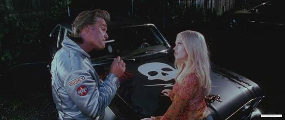

👯 🐍 💥 DEATH PROOF (2007) — CERTIFIED MGC VF-35

🏛 MGC LOWER COURT OF APPEALS
- ASSET TITLE: 👯 🐍 💥 DEATH PROOF (2007) – The Matte-Black 1970 Chevy Nova SS Stunt-Cage Strike
- BASELINE BENCH ASSESSMENT: Room Allocation ➔ MGC VF-35 (Choice Very Fine / Split-Chassis Grindhouse Specimen)
- PRESIDING DOCKET: MGC Judge Bob & Chief Grader MGC
- CASE FILE: #077
📜 THE INITIAL INQUEST & FORENSIC LOG
Under a cold, disciplined 5x lens review, Quentin Tarantino’s 2007 tribute to 1970s muscle-car exploitation packs staggering mechanical striking power—real-metal stunt choreography with zero CGI, Zoë Bell strapped onto the hood of a 1970 Dodge Charger at highway speed, a roll-cage-reinforced 1970 Chevy Nova SS, and Kurt Russell switching seamlessly from charismatic barroom creep to whimpering bully. However, three clear structural defects keep this planchet pinned at VF-35 rather than crossing into Extremely Fine (XF-40+)
🚨 3-FLAW DEFECT LOG:
1. The First-Half Barroom Dialogue Drag
- Nearly half the runtime is spent idling in Austin bars and diners listening to protracted, circular hangout banter before Stuntman Mike ever turns the key—creating a heavy pacing scuff that stalls linear momentum across the opening act.
2. The Two-Act Split-Chassis Reset
- Killing off the entire initial cast in a sudden head-on collision at the midpoint and hitting a full narrative reset with a brand-new group of women in Tennessee fractures the story’s continuous structural velocity.
3. The Artificial Grindhouse Scratch & Reel-Jump Wear
- While the intentional film-grain filters, missing-reel jump cuts, and color-bleed overlays honor 1970s drive-in nostalgia, they also introduce deliberate visual surface wear—and vanish abruptly in the second half—creating an uneven planchet finish.
⚖ THE APPELLATE REVIEW & PARTIAL-SPLIT RULING
Motion 1
(The First-Half Barroom Dialogue Drag):SUSTAINED.
The Court confirms that nearly forty minutes of circular Austin diner and barroom banter stalls the linear throttle before the heavy iron ever hits the asphalt.Motion 2
(The Two-Act Split-Chassis Reset):SPLIT / NEUTRALIZED ON THE RECORD.
While wiping out the entire opening cast at the midpoint fractures traditional single-track narrative continuity, the shock value successfully clears the deck for Zoë Bell and the 1970 Dodge Charger crew to deliver one of the greatest practical road chases ever filmed. Net point adjustment: 0.Motion 3
(The Artificial Grindhouse Scratch & Reel-Jump Wear):SUSTAINED.
The deliberate film-grain filters and missing-reel jump cuts create noticeable surface wear—and vanishing completely in the Tennessee half leaves an uneven planchet finish.
The Chief Justice audited all three motions under the 5x magnifying lens, holding the baseline allocation steady at VF-35:
🔍 THE FINAL DECREE & CERTIFIED JUDGMENT
- The Final Executive Verdict: With Motions 1 and 3 sustained and the midpoint reset ruling a wash, the Lower Court holds the baseline allocation firm with zero upward adjustment. Practical stunt choreography and Kurt Russell’s dual-gear performance anchor it cleanly at the top of the mid-Very Fine pack. The final, certified consensus score is permanently chiseled into the registry at MGC VF-35 (Choice Very Fine Specimen).
MGC Judge Bob slams his wooden gavel down with a thunderous pop.
- Case Closed! 👯🐍💥

• © 2026 MOVIE GRADING CONSENSUS. All Sovereign Rights Reserved.